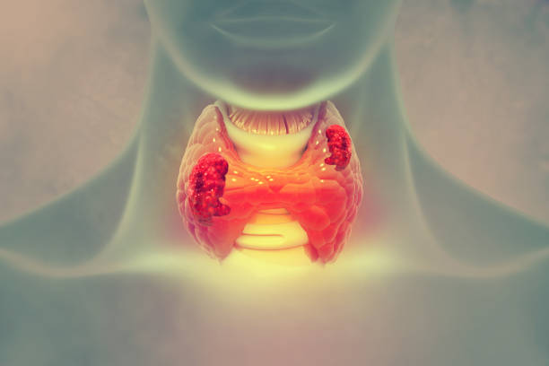

Thyroid Disease and Thyroid Surgery
Types of thyroid disease
- Hormone problems: an underactive (hypothyroid) or overactive (hyperthyroid) gland
- Thyroid nodules: non-cancerous or cancerous
- Infection or inflammation (thyroiditis)
Tests
- Hormone problems: a thyroid function blood test is usually enough.
- Nodules: ultrasound scan and FNAC (a needle sample).
- Thyroiditis: both blood tests and a scan.
Warning signs
Underactive thyroid (hypothyroidism)
Tiredness, slow heart rate, weight gain, irregular periods, feeling cold, dry skin and a puffy face.
Overactive thyroid (hyperthyroidism)
Anxiety, fine tremor, weight loss, bulging eyes, palpitations and an irregular heartbeat.
Thyroid nodule
A lump felt in the neck, or found by chance on a scan. A change in voice with a thyroid nodule is a warning sign and needs prompt assessment.
Thyroiditis
Features of an underactive or overactive thyroid, sometimes with pain in the neck.
Does all thyroid disease need surgery?
No. Thyroidectomy is done when cancer is suspected, when the gland is large enough to press on the windpipe or food pipe, or in some cases of overactive thyroid.
Types of thyroid surgery
- Total thyroidectomy: the whole gland is removed, usually when cancer is suspected
- Subtotal thyroidectomy: for an overactive thyroid, to reduce hormone production
- Hemithyroidectomy: half the gland is removed, for a suspicious nodule in one lobe. This can often be done as day-care surgery.
Is keyhole thyroid surgery possible?
Endoscopic thyroidectomy can be done through the armpit or through the mouth, leaving no visible scar on the neck. It is suitable for selected patients; very large glands and confirmed cancers are usually better treated with open surgery.
Advice for people on thyroid tablets
- Take your tablet every day.
- Take it on an empty stomach, at least 30 minutes before tea, coffee or food.
- If you miss a dose, ask your doctor whether to take two doses the next day.
- After any change in dose, or if you stop the tablets, check your TSH after 6 weeks and review with your doctor.
- Women who are pregnant or planning pregnancy should discuss their target TSH with their doctor.
Book a consultation
Call 81390 05150 or message on WhatsApp. See clinics and timings.